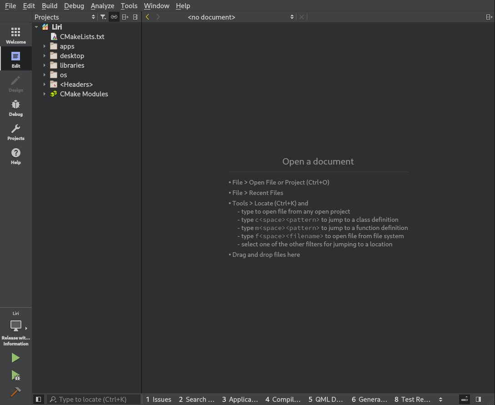
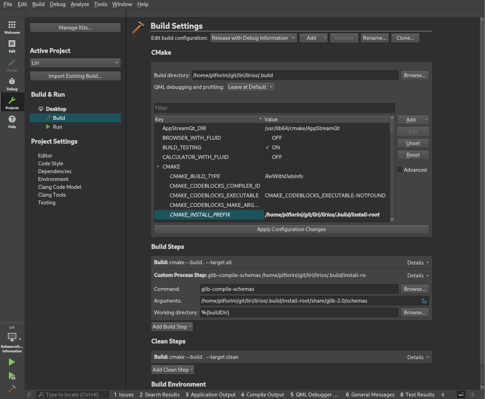
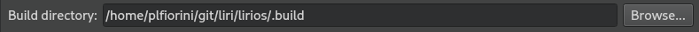
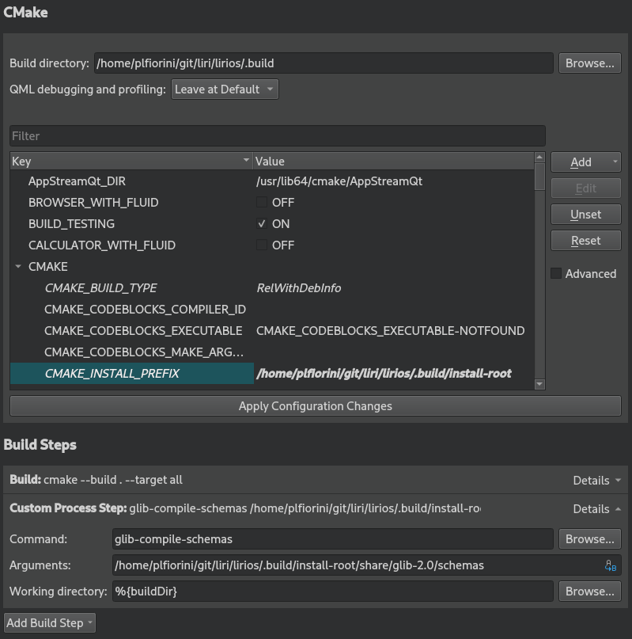
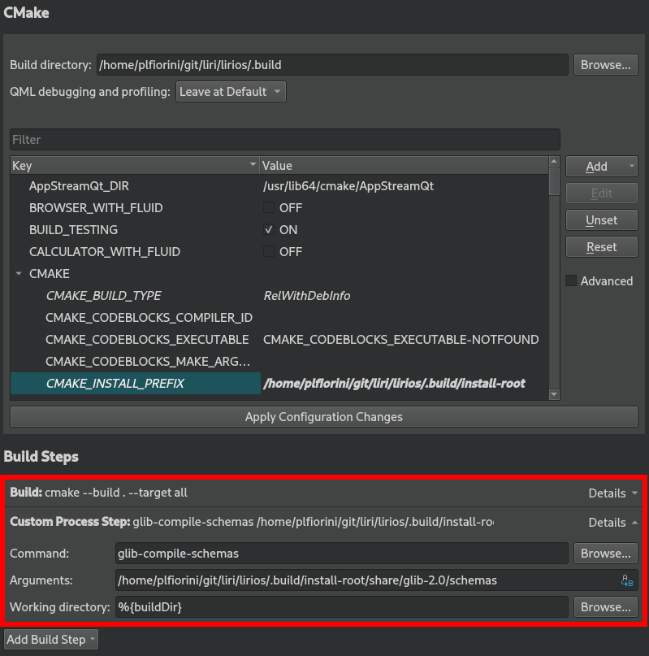

Contributor Guide
With Google's repo command you can download all the projects at once and open them from QtCreator.
Prerequisites
In this guide we assume that you are using the bash shell and QtCreator 4.3.0 or greater.
Download sources and prepare for the development
Install repo
Your Linux distribution might have repo available, check in their repositories.
We know Arch Linux has got the package, if you are using it just:
sudo pacman -S repo
If you are using another distribution and it doesn't have a package available, follow these instructions:
Create ~/bin/ subdirectory, include it in PATH, and then switch to it by executing the following commands:
mkdir ~/bin/
PATH=~/bin:$PATH
Download the repo script by executing the following command:
curl http://commondatastorage.googleapis.com/git-repo-downloads/repo > ~/bin/repo
Change the attribute of repo to make it executable by executing the command:
chmod a+x ~/bin/repo
Clone the repositories
To clone the latest source of all projects over SSH, perform the following procedure:
Firstly, create a new directory for Liri. This will be referred to as repo root in the docs. Switch to it by executing the following commands:
mkdir -p ~/git/liri/lirios
cd ~/git/liri/lirios
Initialize the repository by executing one of the following commands, as appropriate.
For write access:
repo init -u ssh://git@github.com/lirios/lirios.git -b develop
For read-only access:
repo init -u https://github.com/lirios/lirios.git -b develop
Synchronize the repository by executing the following command:
repo sync
Get ready for development
repo doesn't create local branches for you, hence you end up with a
detached head that points to the last known good commit.
Before you start developing make sure you have local branches:
repo forall -c 'git checkout $REPO_RREV; git submodule update --init --recursive'
Now set git to use the commit template that will help you write good commit messages:
ROOTDIR=$(pwd) repo forall -c 'git config commit.template $ROOTDIR/.commit-template'
Setup the environment
The installation root is the directory where all files will be installed when building the Liri master project from QtCreator.
To set your environment variables correctly so you will be able to launch the cross platform apps, run
source env-setup.sh [nvidia]
Note for users running the Nvidia proprietary drivers: Supply the nvidia argument every time you run the env-setup.sh script
By default, .build/install-root inside your repo root will be used as installation root. To change this, issue the command with the LIRIDIR prefix instead
LIRIDIR="path/to/directory" source env-setup.sh [nvidia]
Open the project
Run QtCreator and open the master project file CMakeLists.txt inside your repo root.

Click on the "Projects" button and setup the build, this needs to be done only the first time.

Set the build directory to whatever you want, just make sure you have access to the directory:

Make sure the build steps are configured like in this screenshot:

Set CMAKE_INSTALL_PREFIX to change the installation root.
Remember to replace /home/plfiorini to your actual home directory.
If you don't want to run all the unit tests during the build set BUILD_TESTING to OFF.
Now create a custom build step like this:

The custom build step will compile the settings schemas so it must be there.
Update sources
New repositories might be added to the manifest or new commits are pushed to existing repositories, so from time to time you need to fetch updated versions.
Make sure all your changes are either committed or stashed and run:
cd ~/git/liri/lirios
repo sync
Now set git to use the commit template that will help you write good commit messages:
ROOTDIR=$(pwd) repo forall -c 'git config commit.template $ROOTDIR/.commit-template'